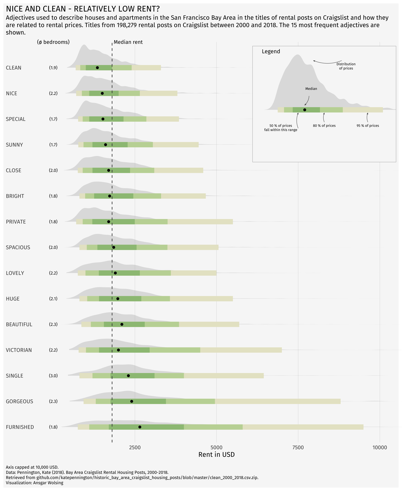
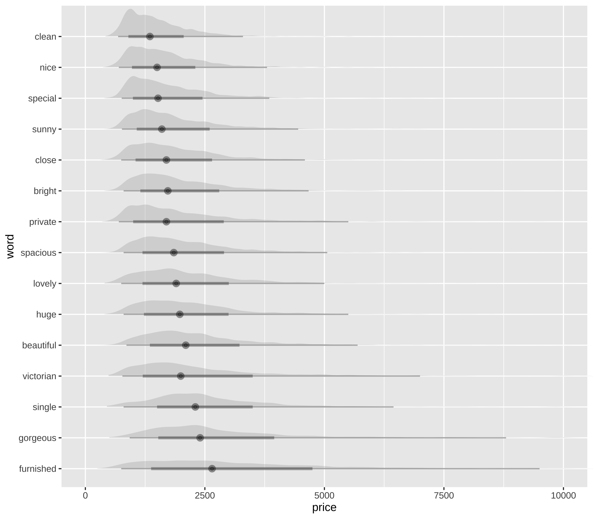
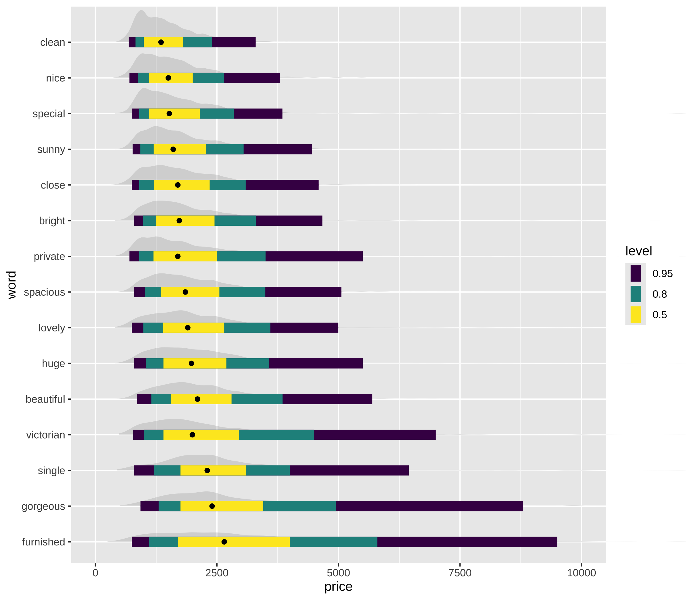
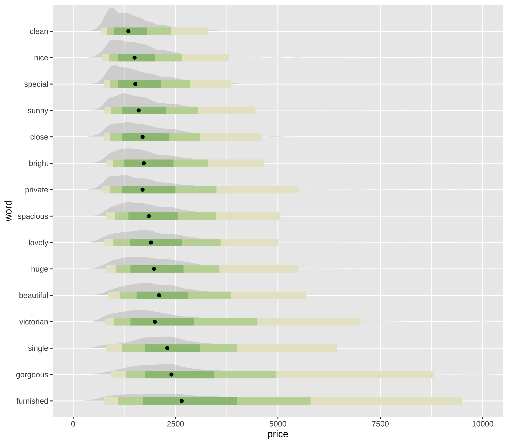
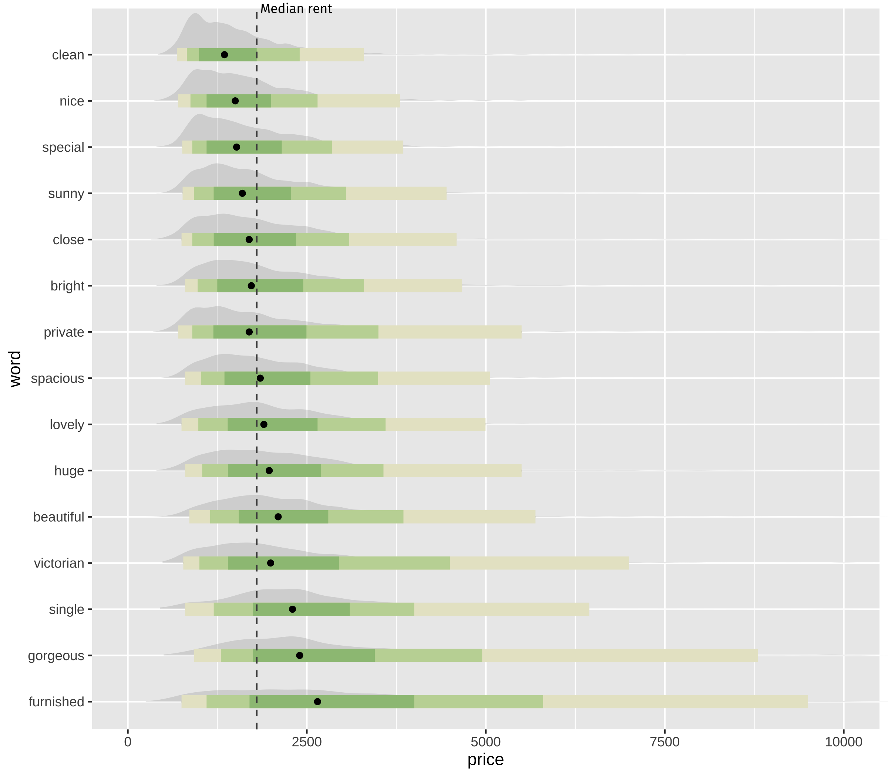
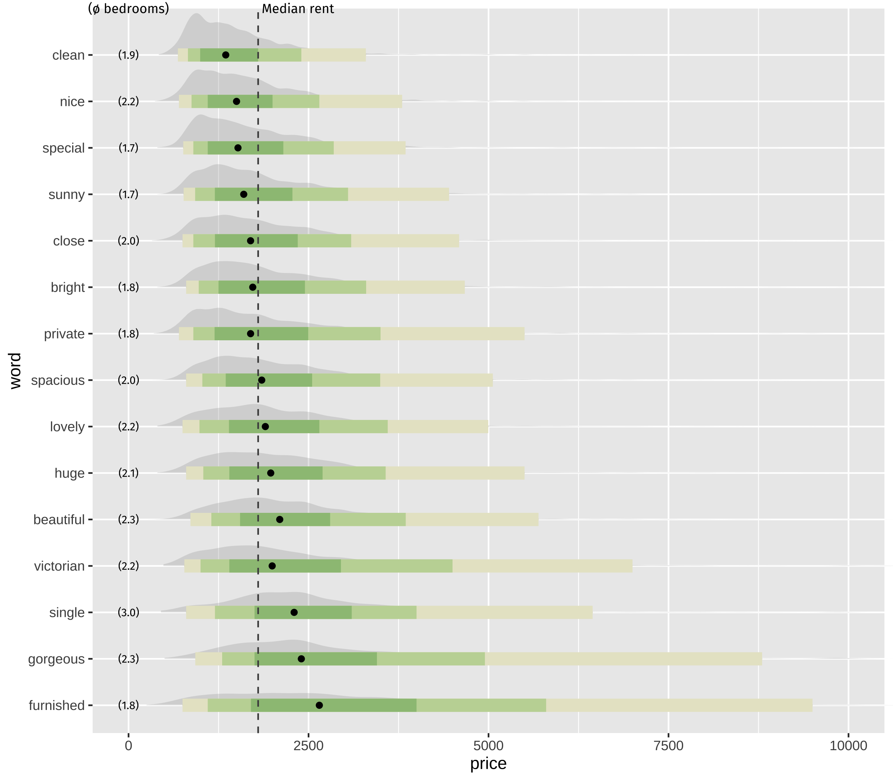
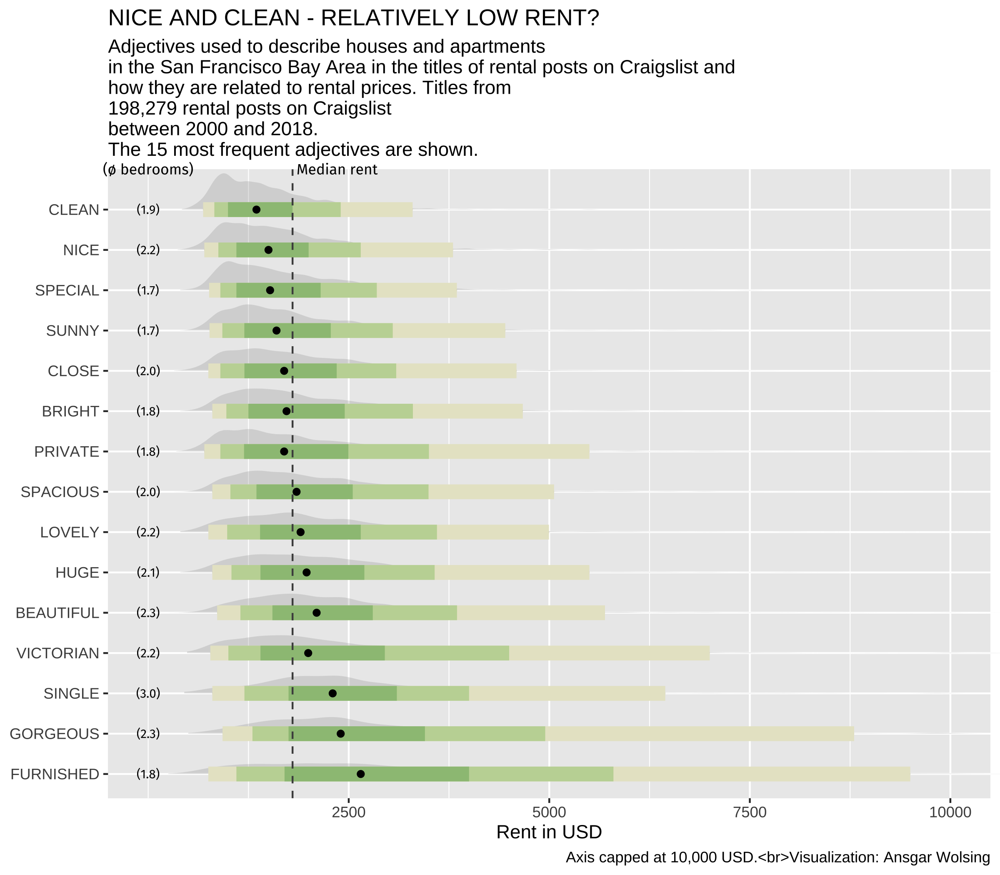
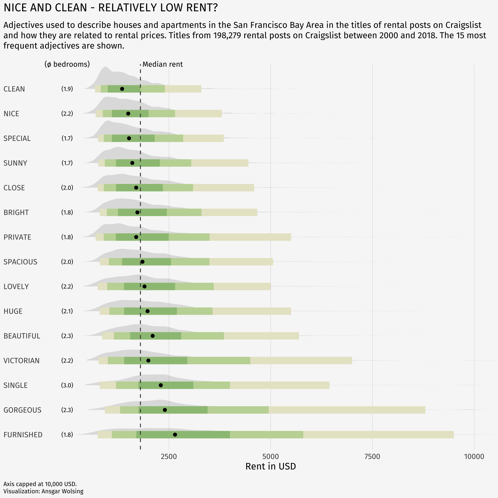
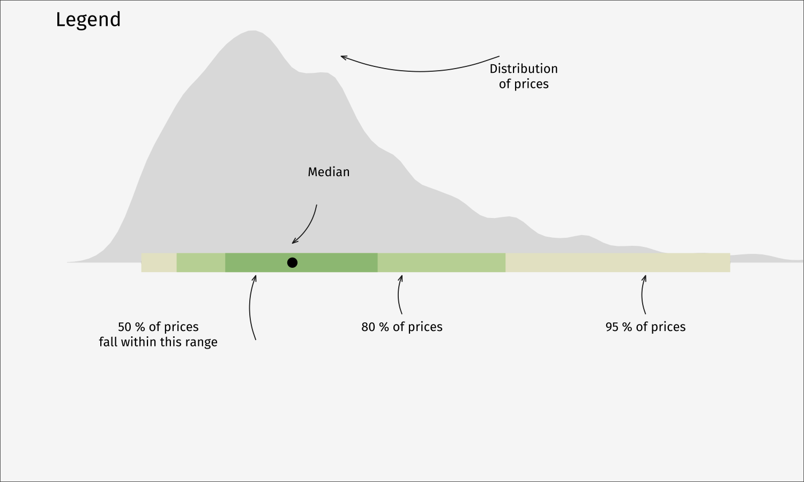
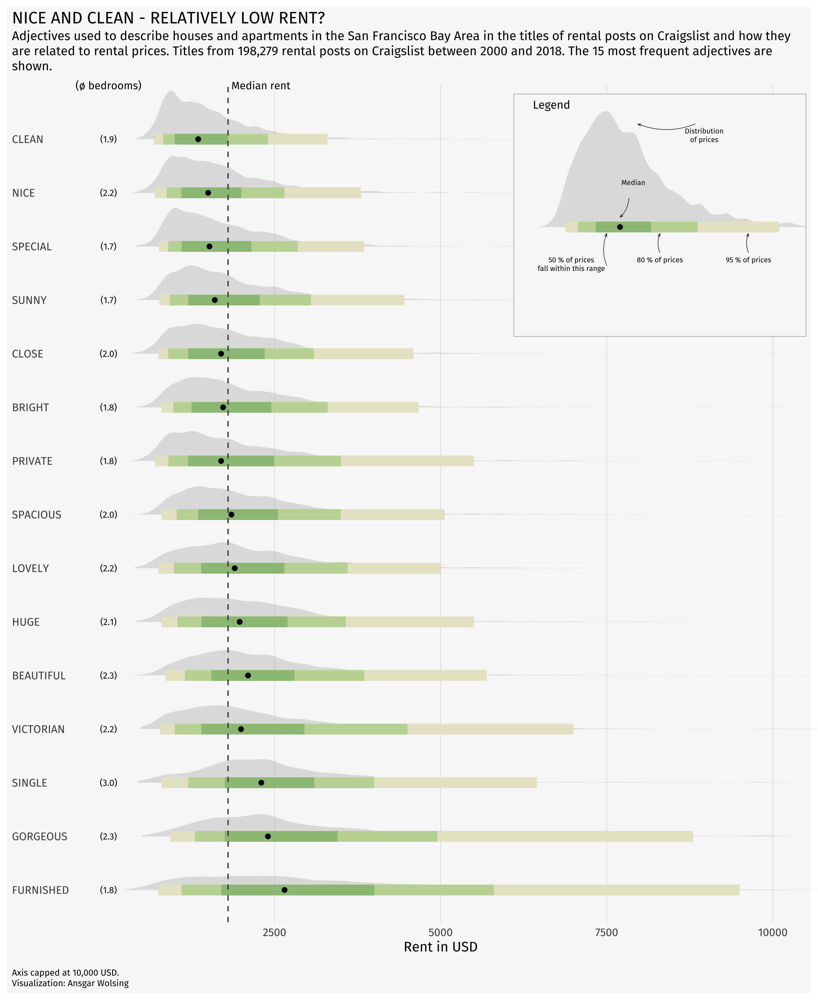

Ridgeline plot with inside plot and annotations
NoteCredit
This reproduces a visualization created by Ansgar Wolsing for TidyTuesday, as featured on the R Graph Gallery. Data: Kate Pennington (2018), Bay Area Craigslist Rental Housing Posts, 2000-2018. All credit for the original design goes to the author.
A distribution-per-adjective ridgeline of San Francisco Bay Area Craigslist rental prices, with an annotated “legend” plot embedded inside the panel.
Show code
library(tidyverse)
library(ggtext)
library(ggdist)
library(glue)
library(patchwork)
library(MetBrewer)
library(showtext)
# Fira Sans is not a system font here; pull it from Google via showtext.
font_add_google("Fira Sans", "Fira Sans")
font_add_google("Fira Sans", "Fira Sans SemiBold")
showtext_auto()
# Load datasets (slimmed copies of the originals)
df_plot <- read_csv(file.path("ridgeline-data", "df_plot.csv"))
rent_title_words <- read_csv(file.path("ridgeline-data", "rent_legend.csv"))
rent_stats <- read_csv(file.path("ridgeline-data", "rent_stats.csv"))
# Prepare data
df_plot <- df_plot %>% arrange(desc(mean_price))
df_plot$word <- factor(df_plot$word, levels = unique(df_plot$word))
# Statistics (precomputed from the full rent dataset)
mean_price <- rent_stats$mean_price
median_price <- rent_stats$median_price
n_rental_posts <- rent_stats$n_rental_posts
bg_color <- "grey97"
font_family <- "Fira Sans"
plot_subtitle = glue("Adjectives used to describe houses and apartments
in the San Francisco Bay Area in the titles of rental posts on Craigslist and
how they are related to rental prices. Titles from
{scales::number(n_rental_posts, big.mark = ',')} rental posts on Craigslist
between 2000 and 2018.
The 15 most frequent adjectives are shown.
")
# Main plot
p <- df_plot %>%
ggplot(aes(word, price)) +
stat_halfeye(fill_type = "segments", alpha = 0.3) +
stat_interval() +
stat_summary(geom = "point", fun = median) +
annotate("text", x = 16, y = 0, label = "(\U00F8 bedrooms)",
family = "Fira Sans", size = 3, hjust = 0.5) +
stat_summary(
aes(y = beds),
geom = "text",
fun.data = function(x) {
data.frame(
y = 0,
label = sprintf("(%s)", scales::number(mean(ifelse(x > 0, x, NA), na.rm = TRUE), accuracy = 0.1)))},
family = font_family, size = 2.5
) +
geom_hline(yintercept = median_price, col = "grey30", lty = "dashed") +
annotate("text", x = 16, y = median_price + 50, label = "Median rent",
family = "Fira Sans", size = 3, hjust = 0) +
scale_x_discrete(labels = toupper) +
scale_y_continuous(breaks = seq(2500, 20000, 2500)) +
scale_color_manual(values = MetBrewer::met.brewer("VanGogh3")) +
coord_flip(ylim = c(0, 10000), clip = "off") +
guides(col = "none") +
labs(
title = toupper("Nice and Clean - Relatively Low Rent?"),
subtitle = plot_subtitle,
caption = "Axis capped at 10,000 USD.<br>
Data: Pennington, Kate (2018).
Bay Area Craigslist Rental Housing Posts, 2000-2018.<br>
Retrieved from github.com/katepennington/historic_bay_area_craigslist_housing_posts/blob/master/clean_2000_2018.csv.zip.
<br>
Visualization: Ansgar Wolsing",
x = NULL,
y = "Rent in USD"
) +
theme_minimal(base_family = font_family) +
theme(
plot.background = element_rect(color = NA, fill = bg_color),
panel.grid = element_blank(),
panel.grid.major.x = element_line(linewidth = 0.1, color = "grey75"),
plot.title = element_text(family = "Fira Sans SemiBold"),
plot.title.position = "plot",
plot.subtitle = element_textbox_simple(
margin = margin(t = 4, b = 16), size = 10),
plot.caption = element_textbox_simple(
margin = margin(t = 12), size = 7
),
plot.caption.position = "plot",
axis.text.y = element_text(hjust = 0, margin = margin(r = -10), family = "Fira Sans SemiBold"),
plot.margin = margin(4, 4, 4, 4)
)
# Create legend (inside plot)
df_for_legend <- rent_title_words %>%
filter(word == "beautiful")
p_legend <- df_for_legend %>%
ggplot(aes(word, price)) +
stat_halfeye(fill_type = "segments", alpha = 0.3) +
stat_interval() +
stat_summary(geom = "point", fun = median) +
annotate(
"richtext",
x = c(0.8, 0.8, 0.8, 1.4, 1.8),
y = c(1000, 5000, 3000, 2400, 4000),
label = c("50 % of prices<br>fall within this range", "95 % of prices",
"80 % of prices", "Median", "Distribution<br>of prices"),
fill = NA, label.size = 0, family = font_family, size = 2, vjust = 1,
) +
geom_curve(
data = data.frame(
x = c(0.7, 0.80, 0.80, 1.225, 1.8),
xend = c(0.95, 0.95, 0.95, 1.075, 1.8),
y = c(1800, 5000, 3000, 2300, 3800),
yend = c(1800, 5000, 3000, 2100, 2500)),
aes(x = x, xend = xend, y = y, yend = yend),
stat = "unique", curvature = 0.2, size = 0.2, color = "grey12",
arrow = arrow(angle = 20, length = unit(1, "mm"))
) +
scale_color_manual(values = MetBrewer::met.brewer("VanGogh3")) +
coord_flip(xlim = c(0.75, 1.3), ylim = c(0, 6000), expand = TRUE) +
guides(color = "none") +
labs(title = "Legend") +
theme_void(base_family = font_family) +
theme(plot.title = element_text(family = "Fira Sans SemiBold", size = 9,
hjust = 0.075),
plot.background = element_rect(color = "grey30", size = 0.2, fill = bg_color))
# Combine main plot with embedded legend
p + inset_element(p_legend, l = 0.6, r = 1.0, t = 0.99, b = 0.7, clip = FALSE)How it is built, step by step
Each tab adds one layer of the recipe on top of the previous one, so you can see what every piece of the final chart contributes. The code for each step is shown below its plot.
ggdist::stat_halfeye() draws a density curve per adjective. coord_flip() is applied from the start so the orientation stays the same across all steps.

step1 <- ggplot(df_plot, aes(word, price)) +
stat_halfeye(fill_type = "segments", alpha = 0.3) +
coord_flip(ylim = c(0, 10000), clip = "off")
step1stat_interval() adds the nested 50 / 80 / 95 % interval bars, and stat_summary() marks the median of each group with a point.

step2 <- ggplot(df_plot, aes(word, price)) +
stat_halfeye(fill_type = "segments", alpha = 0.3) +
stat_interval() +
stat_summary(geom = "point", fun = median) +
coord_flip(ylim = c(0, 10000), clip = "off")
step2The three interval widths get their colours from MetBrewer::met.brewer("VanGogh3"), and the default colour legend is dropped because the inset legend explains it instead.

step3 <- step2 +
scale_color_manual(values = MetBrewer::met.brewer("VanGogh3")) +
guides(col = "none")
step3A dashed geom_hline() at the overall median rent gives every distribution a common anchor to be read against.

step4 <- step3 +
geom_hline(yintercept = median_price, col = "grey30", lty = "dashed") +
annotate("text", x = 16, y = median_price + 50, label = "Median rent",
family = font_family, size = 3, hjust = 0)
step4A text-producing stat_summary() writes the mean number of bedrooms for each adjective at the left edge, which is what keeps the price differences interpretable.

step5 <- step4 +
annotate("text", x = 16, y = 0, label = "(\U00F8 bedrooms)",
family = font_family, size = 3, hjust = 0.5) +
stat_summary(
aes(y = beds),
geom = "text",
fun.data = function(x) {
data.frame(
y = 0,
label = sprintf("(%s)", scales::number(mean(ifelse(x > 0, x, NA), na.rm = TRUE), accuracy = 0.1)))},
family = font_family, size = 2.5
)
step5Axis breaks every 2,500 USD, upper-case category labels, and the title, subtitle and caption text.

step6 <- step5 +
scale_x_discrete(labels = toupper) +
scale_y_continuous(breaks = seq(2500, 20000, 2500)) +
labs(
title = toupper("Nice and Clean - Relatively Low Rent?"),
subtitle = plot_subtitle,
caption = "Axis capped at 10,000 USD.<br>Visualization: Ansgar Wolsing",
x = NULL,
y = "Rent in USD"
)
step6theme_minimal() plus a light background, vertical-only grid lines, left-aligned category labels and ggtext text boxes that wrap the subtitle and caption.

step7 <- step6 +
theme_minimal(base_family = font_family) +
theme(
plot.background = element_rect(color = NA, fill = bg_color),
panel.grid = element_blank(),
panel.grid.major.x = element_line(linewidth = 0.1, color = "grey75"),
plot.title = element_text(family = "Fira Sans SemiBold"),
plot.title.position = "plot",
plot.subtitle = element_textbox_simple(margin = margin(t = 4, b = 16), size = 10),
plot.caption = element_textbox_simple(margin = margin(t = 12), size = 7),
plot.caption.position = "plot",
axis.text.y = element_text(hjust = 0, margin = margin(r = -10),
family = "Fira Sans SemiBold"),
plot.margin = margin(4, 4, 4, 4)
)
step7The annotated legend is a second, standalone plot built from a single adjective (beautiful) with annotate("richtext", ...) labels and geom_curve() arrows.

p_legendpatchwork::inset_element() places the legend in the empty space at the top right of the main panel.

step7 + inset_element(p_legend, l = 0.6, r = 1.0, t = 0.99, b = 0.7, clip = FALSE)